AWAY, 캐리어 beyond 캐리어
DNVD Digitally-Native Vertical Brand (a.k.a V commerce) 사례 디깅하기.
19년 넥스트 유니콘으로 선정된, 캐리어 브랜드인 Away.
Getting Away means getting more out of every trip to come
That’s the idea, and the mission, behind everything we do.
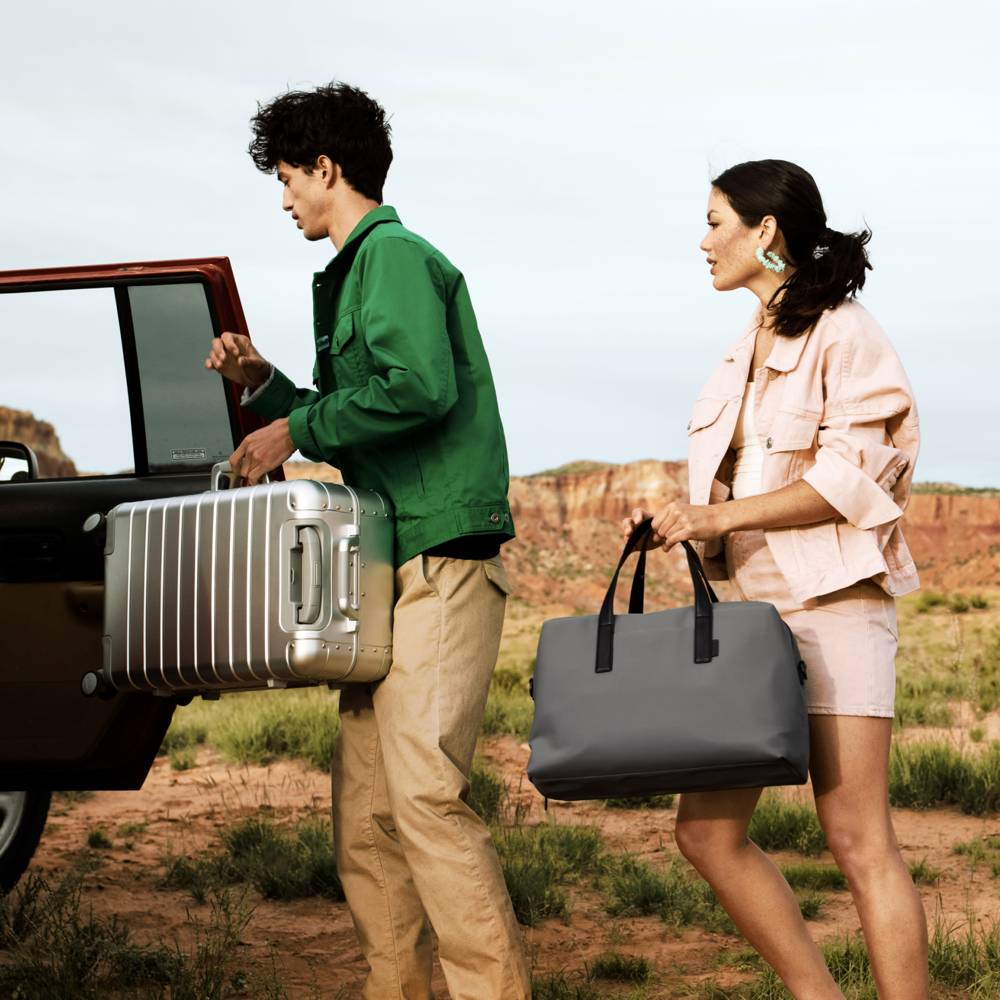
‘여행으로부터 더 많은 것을 얻게 해줄게.’
합리적인 가격의 여행용 캐리어로 마켓을 흔들고 이제는 시티 가이드까지 자청하는 브랜드.’ 미국에서 넥스트 유니콘으로 주목받고 있는 AWAY어웨이를 디깅해 보았다.

Away어웨이라는 브랜드를 관찰하기에 앞서, 여행용 가방 시장을 살펴봤다.
특히 어웨이가 탄생한 미국시장.
1. 여행가방 시장
시장조사기관 NPD그룹의 추산에 따르면 미국에서만 30억 달러, 전 세계로 보면 350억 달러에 달하는 여행가방 시장은 기업 간 인수합병으로 어수선한 상황. 16년 LVMH가 인수한 리모와는 억만장자 LVMH 회장의 아들 알렉산더 아르노(26)의 지휘 아래 변화를 겪고 있으며, 업계 선두주자 쌤소나이트는 고가 브랜드 투미를 18억 달러에 인수했다. 투미는 지난해 6억7800만 달러 매출을 올리며 성장률이 가장 높은 브랜드 중 하나로 자리매김했다.
1. 미국 내 규모 및 성장률
<미국 일반 및 여행용 가방시장 내 세부 카테고리별 시장 규모 및 성장률 (단위:USD 백만, %)>
 (http://news.kotra.or.kr/user/globalBbs/kotranews/799/globalBbsDataView.do?setIdx=254&dataIdx=176548)
(http://news.kotra.or.kr/user/globalBbs/kotranews/799/globalBbsDataView.do?setIdx=254&dataIdx=176548)
여행용 가방 카테고리는 전년대비 성장률이 백팩 다음으로 높고, 지난 5년간 연평균 5.9% 성장했다.
향후 2023년까지도 다른 분야보다 다소 높은 연평균 2.8%의 성장률이 예측된다. (But, 이 자료에 코로나 여파는 계산되지 않았을 것)
우리나라만해도 11년-16년까지 여행용 가방은 연평균 11.9%로 엄청난 고성장을 지속했고, 추가로 한국산 가방류 대미 수출은, 전년 대비 약 98.65% 증가했다고 한다. (이 포인트에서 parity가 탄생한걸까? - parity 이야기는 아래에.)
2. 미국 내 주요 유통채널(온/오프)
2-1)오프라인 유통채널
-
일반/여행용 가방 약 75.2%가 오프라인 매장을 통해 유통. 이 중 일반/여행용 가방 전문 판매점을 통한 유통이 32.3%로 가장 높다. (Euromonitor 보고서)
-
인지도 높은 여행용 가방 브랜드(샘소나이트,브릭스앤릴리 투미,델시,트래블프로,리모와,빅토리아 녹스 등)는 대부분 자체 오프라인 매장이 있어서 여행용 가방 제품을 전문적으로 취급하고 있으며, 이 외의 여행용 가방 전문 판매점은 Luggage Pros, The Luggage Factory 등이 있다. 노드스트롬Nordstrom, 메이시스Macy’s 같은 백화점과 콜스Kohl’s, 타겟, 코스트코 같은 대형 마트를 통해서도 유통되고 있다.
2-2)온라인 유통채널
- 일반/여행용 가방 약 23.9%가 온라인을 통해 유통. 최근 5년간 오프라인 소매점을 통한 여행용 가방의 판매가 전반적으로 하락세를 보이는 것과 대조적으로, 온라인을 통한 판매는 유통 채널들 중 유일하게 지속적인 상승세이다. (Euromonitor 보고서)
- 광범위한 제품을 모두 취급하는 Amazon.com을 비롯한 온라인 판매점들이 점차 공격적으로 빠른 배송과 불편함 없는 교환/환불 서비스를 제공하며 경쟁을 이어가는 가운데, 이러한 온라인 판매의 증가세 또한 꾸준히 이어질 것으로 예상.
2. AWAY의 시작
이런 시장에서 어웨이는 2015년, 합리적 가격을 내세우는 온라인 기반 브랜드로 탄생했다.
공동 창업자인 젠 루비오(Jen rubio)와 스테프 코리(Steph korey)는 와비파커 초기 직원이면서 같은 날 입사한 동기다.
공항에서 캐리어가 고장났던 젠이 페북의 2600명 친구들에게 어떤 캐리어가 좋은지 물어봤지만 아무도 적절한 답변을 주지 못했다고 한다. 이 경험을 통해 와비파커의 모델을 캐리어에도 동일하게 적용하는 법을 생각했다고 한다.
첫 번째 기내용 캐리어가 고객에게 배송된 2016년, AWAY의 매출은 1,200만 달러, 2017년에는 매출 성장율은 무려 500%였다고 한다. 2년차인 17년에 바로 흑자전환.
“역사적으로 여행 가방 시장은 바퀴, 지퍼와 같은 기능성에 중점을 두고 있었고 마케팅은 정말 형편없었습니다. 스토리텔링이 가능한 성숙한 시장이었지만 전혀 스토리텔링이 없었습니다.”
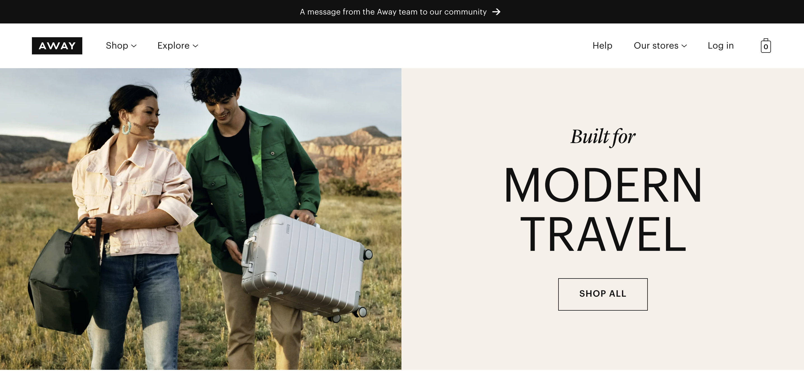

https://www.awaytravel.com/our-story
3. 합리적인 가격설정
- 당시 Rimowa 알루미늄 클래식같은 970달러의 하이엔드 제품과 50달러선의 저가 상품 사이에 중간 가격대 상품이 극히 적었다. 가격면에서 매우 파편화되어있고, 브랜드 충성도 또한 낮은 시장.
-
AWAY는 이 중간 가격대를 공략하는 브랜드로 포지셔닝. 뛰어난 제품력의 캐리어를 100일 트라이얼 기회 제공과 라이프타임 워런티!평생보증!까지 포함해 225달러에 내놓았다.
- TSA 승인을 받은 번호 자물쇠, HKK 지퍼, 히노모토(Hinomoto) 바퀴 그리고 분리 가능한 스마트폰을 충전용 37와트 리튬 이온 배터리를 가진 상품
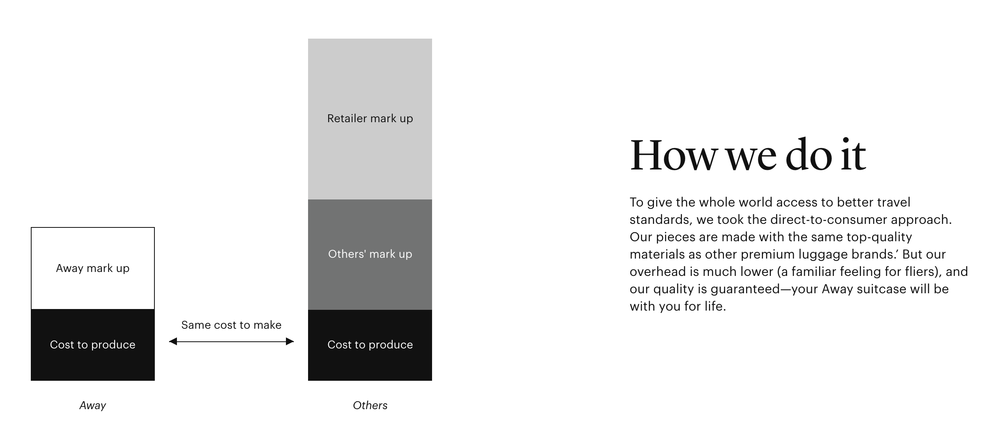
간접비Overhead를 줄여서 합리적 가격을 제시할 수 있다. TV CF보다는 인플루언서 마케팅을 활용하고, 백화점 등에 입점하지않아 유통비가 줄었고 온라인 판매 위주이다. 현재는 12개의 오프라인 매장이 있다.
미국 내 배송비 포함 225달러. 배송료 투미의 비슷한 모델은 두배 넘는 가격인 525달러이다.
4. 제품
어웨이의 폴리카보네이트 소재 가방은 바퀴 4개 모두 360도로 돌아가는 히노모토 스피너 모델을 사용했으며, 튼튼한 YKK 지퍼를 사용해 가방을 험하게 사용해도 쉽게 뜯어지지 않는다. 게다가 1만mAh(시간당 밀리암페어 전류량) 리튬이온 배터리가 있어 휴대폰도 충전할 수 있다. 충전기는 항공기 안전규정과 충전기가 내장된 기내용 가방 휴대를 금지한 일부 항공사 방침에 따라 필요에 따라 탈부착이 가능하도록 디자인됐다. 가방 안에 있는 압박 스트랩이나 패드를 이용해 위에서 찍어 누르면 더 많은 옷이나 물건을 밀어 넣을 수도 있다.
제품 출시 수개월 만에 특허출원을 시작했고, 지금까지 전 세계에서 특허를 12건 이상 인정받은 상태다.
수트케이스 The Carry-On 기본모델을 시작으로 라인업을 확장했고, 일반가방, 캐리어 내부 수납을 위한 오거나이저 등의 카테고리도 추가되었다.
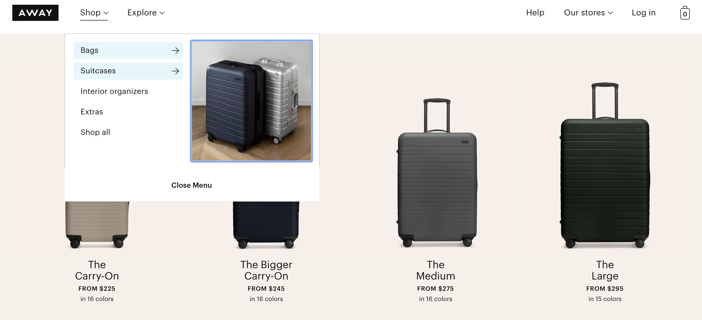

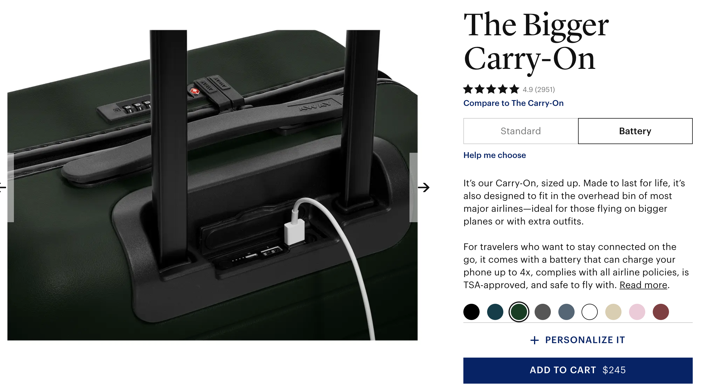
(17년, 리튬배터리 기내반입 금지조항이 생기면서, 충전형 배터리를 내장했던 어웨이는 타격을 입는다. 스마트 캐리어를 표방한 여러 경쟁사들은 기술을 넘기고 폐업을 선언하기도 하는 불리한 상황에서 어웨이는 배터리를 분리형으로 변경하고 튼튼하지만 더 가볍게, 더 많이 넣을 수 있게, 쉽게 들수있게하는 등 본질에 집중했다.)
5. 서비스

100일 트라이얼 기간이 있다. 나가기 전까진 어떤게 핏한지 알 수 없으니, 실제 여행도 다녀와보고 사진도 찍어보고 스티커도 붙여보라는 자신감.(커스텀한 경우는 제외)

게다가 라이프타임 워런티이다. 평생보장~~
단, 배터리는 2년보장이다. 뭐 어떠랴 2년이면 충분하지 않나.
6. 유통
간접비용이 많이 들어가는 백화점을 피했다. 판매는 대부분 온라인 채널에서 이루어진다. 오프라인 매장은 유동인구가 많은 곳에 마련해 온라인 판매를 끌어올리는 역할을 한다. 평일에는 저녁 7시, 주말에는 더 늦게까지 영업하는 직영 매장에서는 손금 보기나 타로카드처럼 돈이 많이 들지 않는 알뜰 이벤트가 열린다. 투자금 대비 효과, 이른바 ‘가성비 좋은’ 곳에 마케팅을 집중하는 것이다. 고객을 위한 온라인 여행잡지를 간행하며 다양한 디지털 마케팅도 한다. 인스타그램에서 어웨이를 인증하고 홍보하는 인플루언서만 해도 1000명이 넘는다.
7. 마케팅
1. “The Places We Return To” 우리가 돌아다닌 여행지


15년 11월 상품을 출시하기 직전, 흔한 프리오더 이벤트를 여는 대신 소셜 미디어를 위한 콘텐츠로 책을 발간했다.
40명의 사진가, 예술가, 여행작가들이 AWAY 협찬 기사를 모아 “The Places We Return To, 우리가 돌아다닌 여행지”라는 제목의 선물하기도 좋은 근사한 책자이다.
“우리가 집착하는 건 캐리어가 아니라 여행이에요. 여행 때문에 이 사업을 시작한 겁니다.”
2. Here Magazine

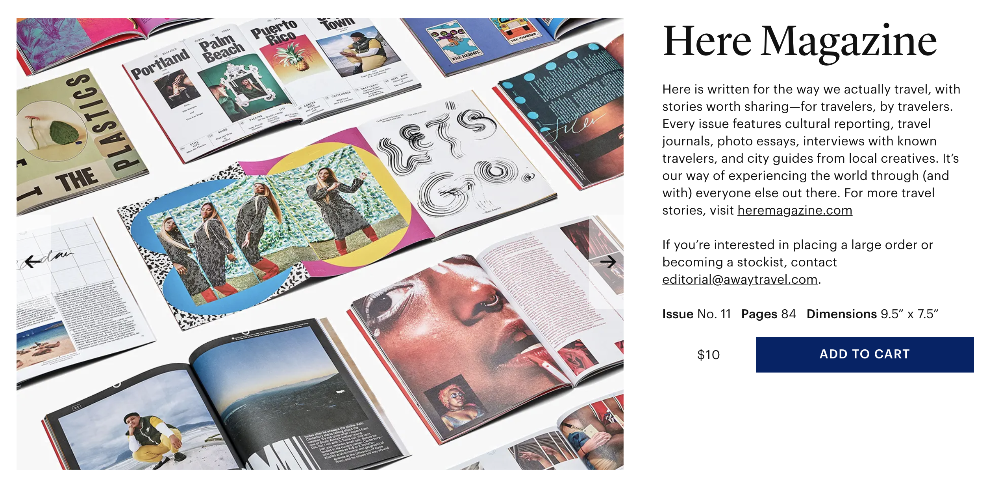
Here 라는 이름의 매거진을 프린트($10)로도 만들고, 온라인으로도 발행한다.
여행브랜드로 점프업하는 순간이다. 직접 만들어내는 콘텐츠들을 통해 캐리어 to 여행으로 브랜드를 확장시킨다.
Here Magazine tells compelling, thoughtful, and unique travel stories through the lens of local, creative, and influential people..
우리는 ‘사람’에게 집중합니다. 공간의 핵심이기도 하고, 문화를 정의하며 또 공유 할만한 관계를 만드는 주체이기 때문이죠. 여행 저널, 포토 에세이, 인터뷰 및 도시 가이드는 우리가 세상을 보는 방식에 대한 창입니다.
seamless한 여행을 위해 사려깊은 물건을 만드는 Away에서 발행하는 **
We’re Here for you, wherever you are.
3. ‘셰 어웨이(Chez Away)’ 팝업 호텔
17년 파리 패션위크 주간에는 ‘셰 어웨이(Chez Away)’ 팝업 호텔을 깜짝 개장하고 스킨케어부터 의류, 여행 예약에 이르기까지 모든 분야에서 사업 가능성을 타진했다.
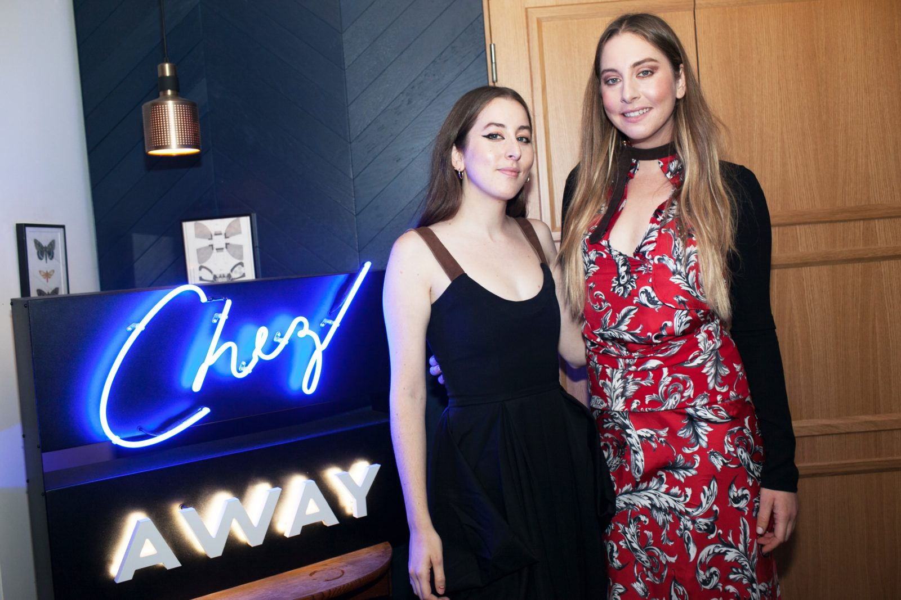
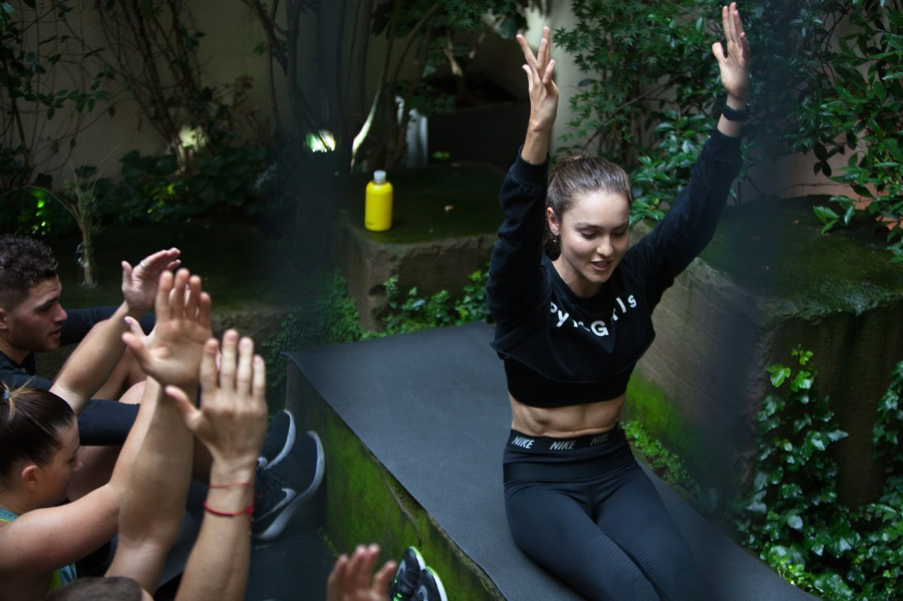
https://www.heremagazine.com/articles/inside-chez-away-paris-fashion-weeks-coolest-pop-up-hotel
https://www.prcouture.com/2017/10/campaigns-we-love-the-chez-away-pop-up-hotel-in-paris/
4. 팟캐스트 ‘에어플레인 모드’
Explores the reasons we travel and places we find ourselves.
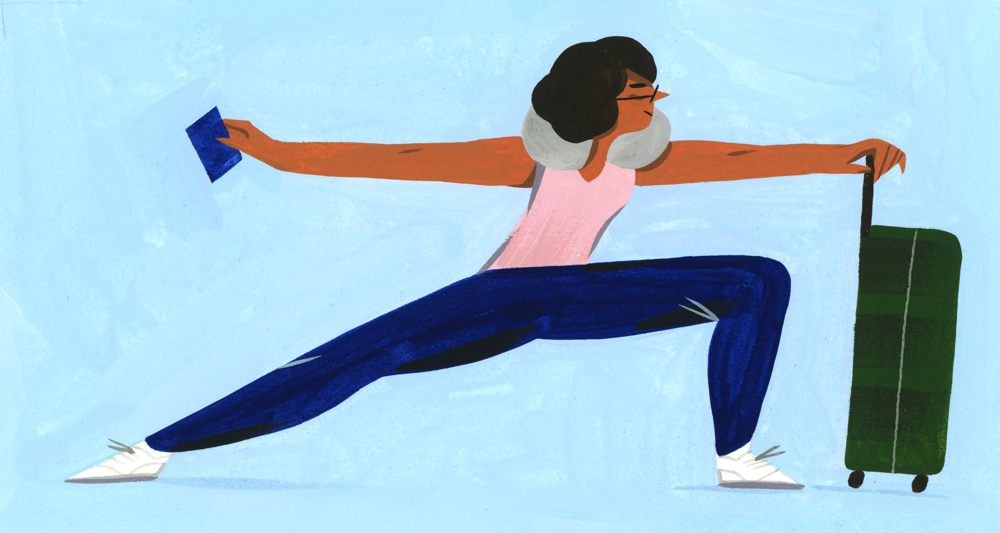
감정 전문가가 들려주는 보다 건강한 여행을 위한 팁,
여행이 정신 상태를 어떻게 개선 할 수 있는지,
일과 여행의 균형을 맞추는 방법, 발리에서 영감을 얻고 유연한 경력을 활용하는 방법 등 다양한 이야기를 들려준다.
https://www.awaytravel.com/airplanemode
5. 인플루언서 마케팅
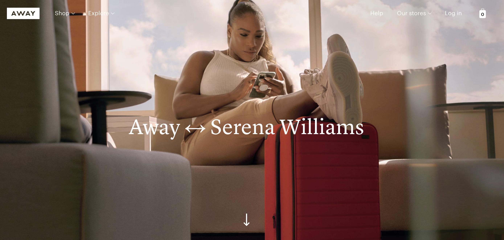
어웨이는 나이키처럼 셀럽들과 파트너십을 맺고 있다. 모델이자 사업가인 칼리 클로스(Karlie Kloss), 배우 라시다 존스(Rashida Jones)에게는 한정판 제품을 제공하고 있다. 9월에는 ‘마이애미 히트’의 드웨인 웨이드(Dwyane Wade)와 손잡고 와인 케이스를 선보였는데 수주 만에 동이 나기도 했다. 현재는 홈페이지에 Away x Serena Williams, Away x Pantone 컬렉션이 올라와 있다.
8. 국내에는 Parity.
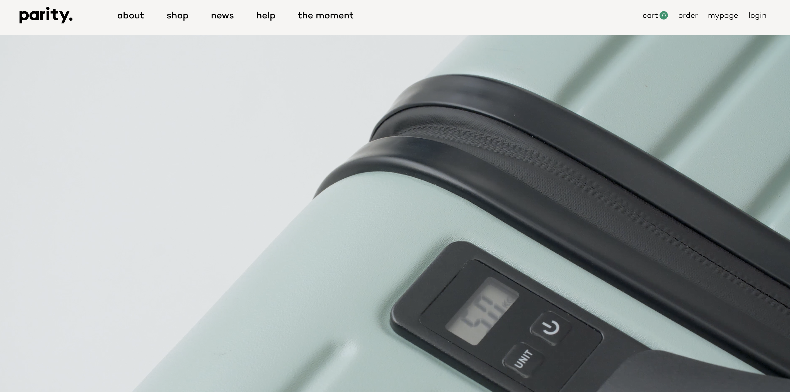
블랭크코퍼레이션이 만든 ‘parity’라는 브랜드가 있다.https://parity.kr/index.html
Away와 유사한 브랜드의 결로, 제품을 전개하고 있다.. 자체 저울을 달았다는 점, 국내생산이라는 점이 차이. (어웨이는 중국산이다.)
참고 기사:https://jmagazine.joins.com/forbes/view/324279